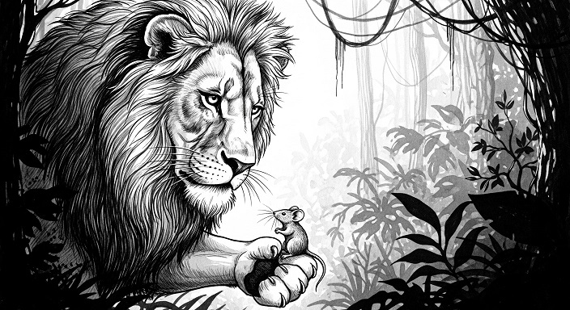
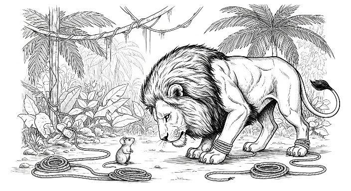

Once when a Lion was asleep a little Mouse began running up and down upon him; this soon wakened the Lion, who placed his huge paw upon him, and opened his big jaws to swallow him.
"Pardon, O King," cried the little Mouse: "forgive me this time, I shall never forget it: who knows but what I may be able to do you a turn some of these days?"
The Lion was so tickled at the idea of the Mouse being able to help him, that he lifted up his paw and let him go.
Some time after the Lion was caught in a trap, and the hunters who desired to carry him alive to the King, tied him to a tree while they went in search of a waggon to carry him on. Just then the little Mouse happened to pass by, and seeing the sad plight in which the Lion was, went up to him and soon gnawed away the ropes that bound the King of the Beasts.
"Was I not right?" said the little Mouse.